Visualize DEGs
VizDEGs.RdVisualize differentially expressed genes
Usage
VizDEGs(
degs,
plot_type = c("volcano_pct", "volcano_log2fc", "jitter_pct", "jitter_log2fc",
"heatmap", "heatmap_log2fc", "dot", "violin", "box", "bar", "ridge", "dim", "dot"),
order_by = "desc(abs(avg_log2FC))",
genes = 10,
outprefix = NULL,
devpars = list(res = 100),
more_formats = c(),
save_code = FALSE,
show_row_names = TRUE,
show_column_names = TRUE,
cutoff = NULL,
...
)Arguments
- degs
DEGs from RunSeuratDEAnalysis
- plot_type
Type of plot to generate One of 'volcano_pct', 'volcano_log2fc', 'jitter_log2fc', 'jitter_pct', 'violin', 'box', 'bar', 'ridge', 'dim', 'heatmap', 'dot', 'heatmap_log2fc'.
'volcano_pct': Volcano plot with x-axis as percentage difference and y-axis as adjusted p-value
'volcano_log2fc': Volcano plot with x-axis as log2 fold change and y-axis as adjusted p-value
'jitter_pct': Jitter plot with x-axis as groups and y-axis as percentage difference
'jitter_log2fc': Jitter plot with x-axis as groups and y-axis as log2 fold change
'violin': Violin plot of gene expression
'box': Box plot of gene expression
'bar': Bar plot of average gene expression
'ridge': Ridge plot of gene expression
'dim': Dimensionality reduction plot of gene expression
'heatmap': Heatmap of gene expression, colors represent expression level
'dot': Dot plot of gene expression, colors represent expression level, size represent percentage of cells expressing the gene
'heatmap_log2fc': Heatmap of average log2 fold change of the genes in each group, colors represent log2 fold change
- order_by
An expression in string to order the genes
- genes
Number of genes genes to visualize (based on the 'order_by' expression) Or an expression in string to filter the genes (passed by dplyr::filter) Only works when plot_type is not a volcano plot
- outprefix
Prefix of the output file
- devpars
List of parameters to save the plot
- more_formats
Additional formats to save the plot in addition to 'png'
- save_code
Whether to save the code to reproduce the plot
- show_row_names
Whether to show row names in the heatmap/dotplot
- show_column_names
Whether to show column names in the heatmap/dotplot
- cutoff
Cutoff for adjusted p-value to show asterisk (*) in heatmap_log2fc
- ...
Additional arguments to pass to the plot function
For 'volcano_pct' and 'volcano_log2fc', additional arguments to pass to
plotthis::VolcanoPlot()For 'jitter_pct' and 'jitter_log2fc', additional arguments to pass to
plotthis::JitterPlot()For 'violin', 'box', 'bar', 'ridge', 'dim', 'heatmap', 'dot', additional arguments to pass to
scplotter::FeatureStatPlot()For 'heatmap_log2fc', additional arguments to pass to
plotthis::Heatmap().
Examples
# \donttest{
degs <- RunSeuratDEAnalysis(scplotter::pancreas_sub, "SubCellType")
VizDEGs(degs, plot_type = "volcano_pct")
 VizDEGs(degs, plot_type = "volcano_log2fc")
VizDEGs(degs, plot_type = "volcano_log2fc")
 VizDEGs(degs, plot_type = "jitter_log2fc")
VizDEGs(degs, plot_type = "jitter_log2fc")
 VizDEGs(degs, plot_type = "violin", genes = 2)
VizDEGs(degs, plot_type = "violin", genes = 2)
 VizDEGs(degs, plot_type = "violin", stack = TRUE, genes = 2)
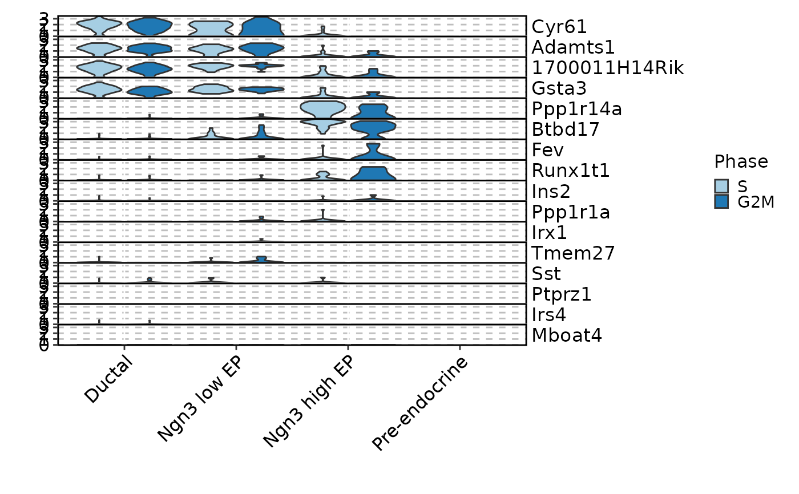
VizDEGs(degs, plot_type = "box", genes = 2)
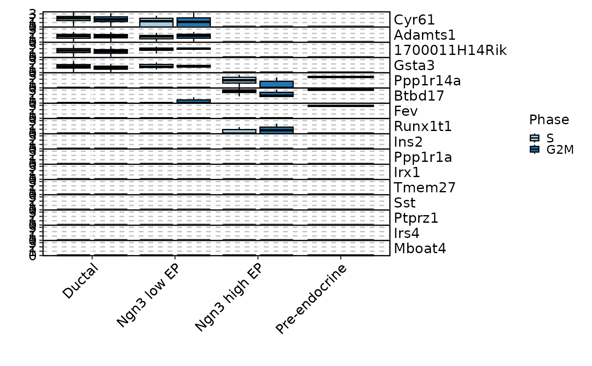
VizDEGs(degs, plot_type = "bar", genes = 2, x_text_angle = 90)
VizDEGs(degs, plot_type = "ridge", genes = 2)
#> Picking joint bandwidth of 0.196
#> Picking joint bandwidth of 0.377
#> Picking joint bandwidth of 0.26
#> Picking joint bandwidth of 0.222
#> Picking joint bandwidth of 0.213
#> Picking joint bandwidth of 0.327
#> Picking joint bandwidth of 0.219
#> Picking joint bandwidth of 0.246
#> Picking joint bandwidth of 0.243
#> Picking joint bandwidth of 0.274
#> Picking joint bandwidth of 0.249
#> Picking joint bandwidth of 0.196
#> Picking joint bandwidth of 0.377
#> Picking joint bandwidth of 0.26
#> Picking joint bandwidth of 0.222
#> Picking joint bandwidth of 0.213
#> Picking joint bandwidth of 0.327
#> Picking joint bandwidth of 0.219
#> Picking joint bandwidth of 0.246
#> Picking joint bandwidth of 0.243
#> Picking joint bandwidth of 0.274
#> Picking joint bandwidth of 0.249
VizDEGs(degs, plot_type = "violin", stack = TRUE, genes = 2)
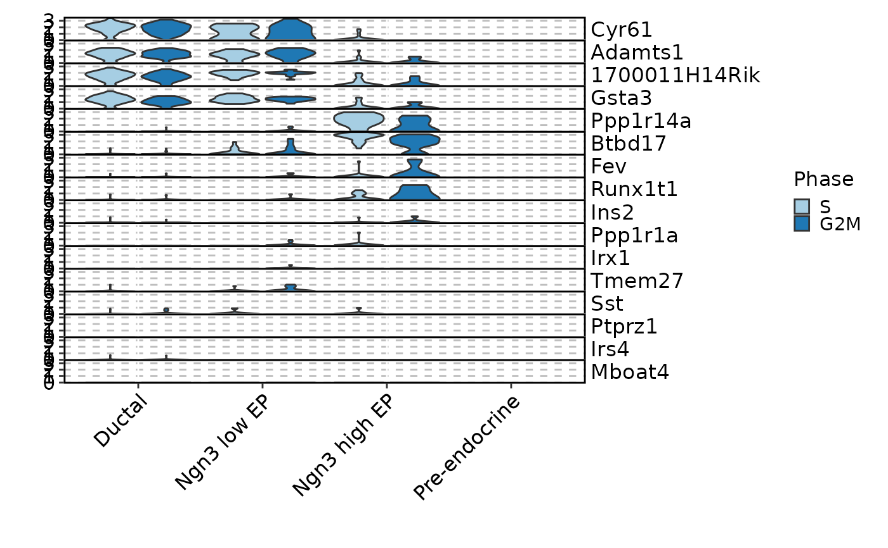
VizDEGs(degs, plot_type = "box", genes = 2)
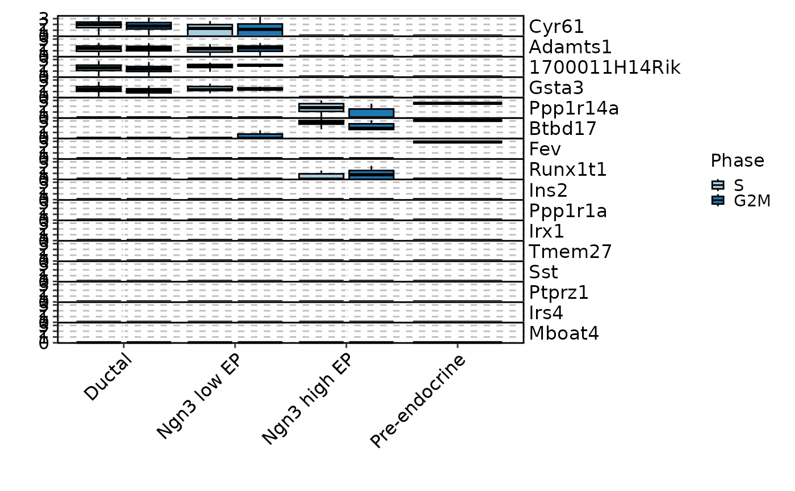
VizDEGs(degs, plot_type = "bar", genes = 2, x_text_angle = 90)
VizDEGs(degs, plot_type = "ridge", genes = 2)
#> Picking joint bandwidth of 0.196
#> Picking joint bandwidth of 0.377
#> Picking joint bandwidth of 0.26
#> Picking joint bandwidth of 0.222
#> Picking joint bandwidth of 0.213
#> Picking joint bandwidth of 0.327
#> Picking joint bandwidth of 0.219
#> Picking joint bandwidth of 0.246
#> Picking joint bandwidth of 0.243
#> Picking joint bandwidth of 0.274
#> Picking joint bandwidth of 0.249
#> Picking joint bandwidth of 0.196
#> Picking joint bandwidth of 0.377
#> Picking joint bandwidth of 0.26
#> Picking joint bandwidth of 0.222
#> Picking joint bandwidth of 0.213
#> Picking joint bandwidth of 0.327
#> Picking joint bandwidth of 0.219
#> Picking joint bandwidth of 0.246
#> Picking joint bandwidth of 0.243
#> Picking joint bandwidth of 0.274
#> Picking joint bandwidth of 0.249
 VizDEGs(degs, plot_type = "dim", genes = 1)
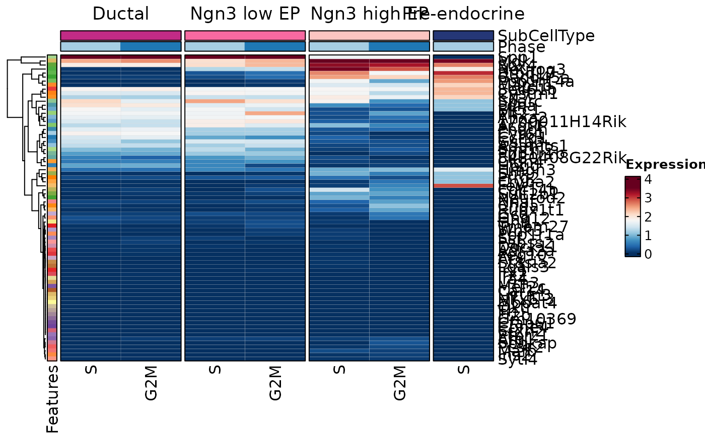
VizDEGs(degs, plot_type = "heatmap", genes = 5)
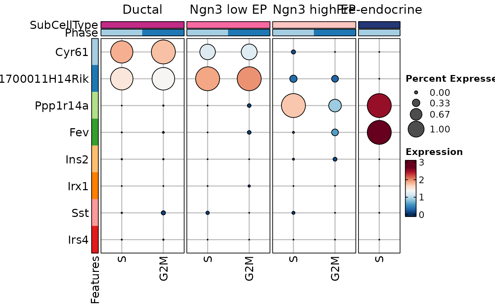
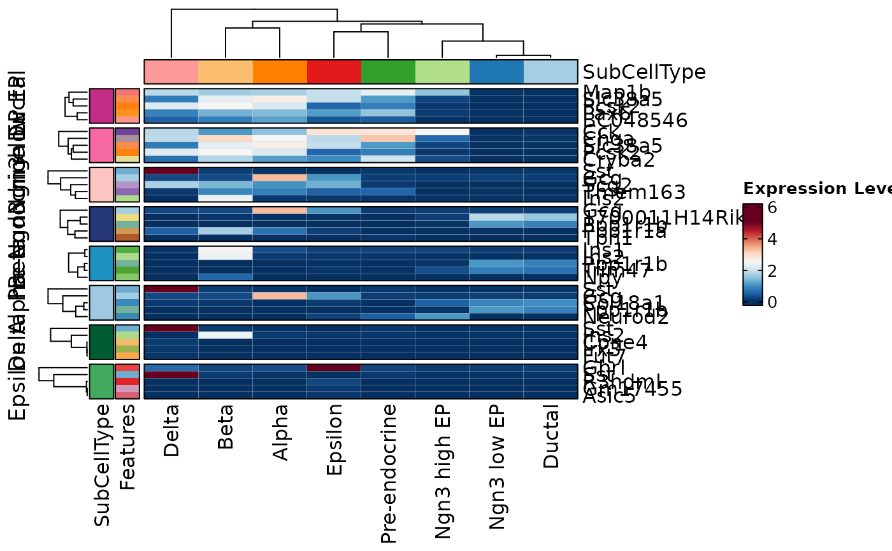
VizDEGs(degs, plot_type = "heatmap_log2fc", cutoff = 0.05, genes = 5)
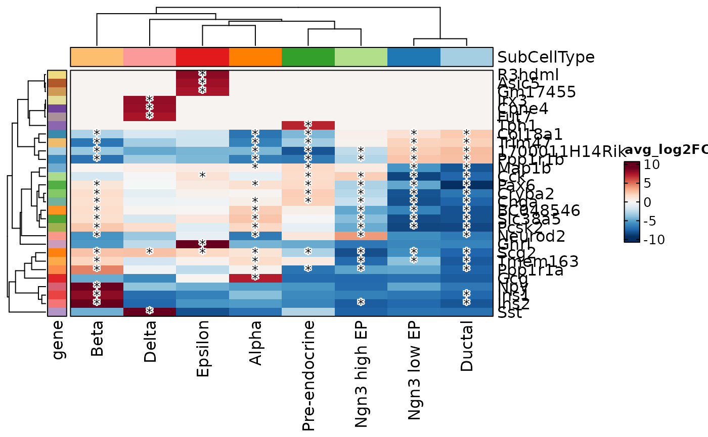
VizDEGs(degs, plot_type = "dim", genes = 1)
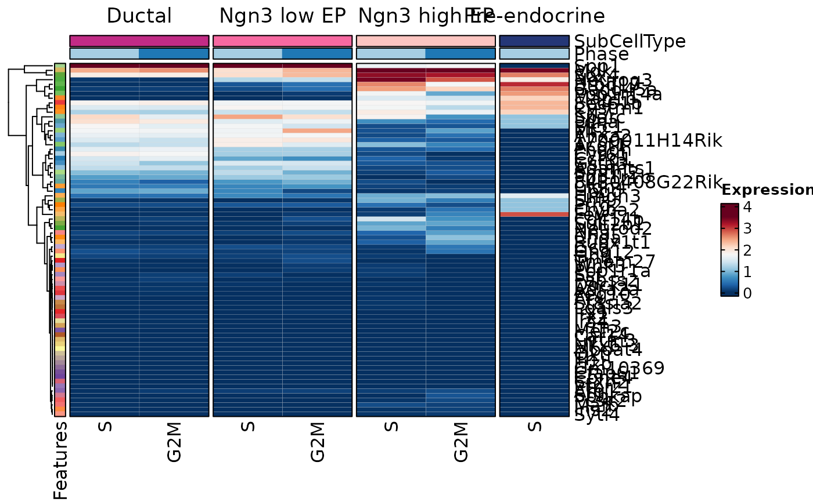
VizDEGs(degs, plot_type = "heatmap", genes = 5)
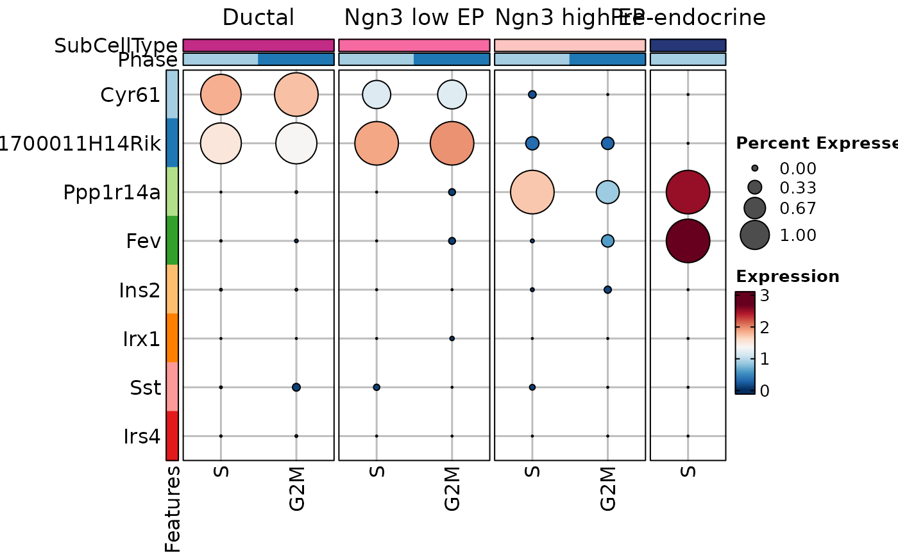
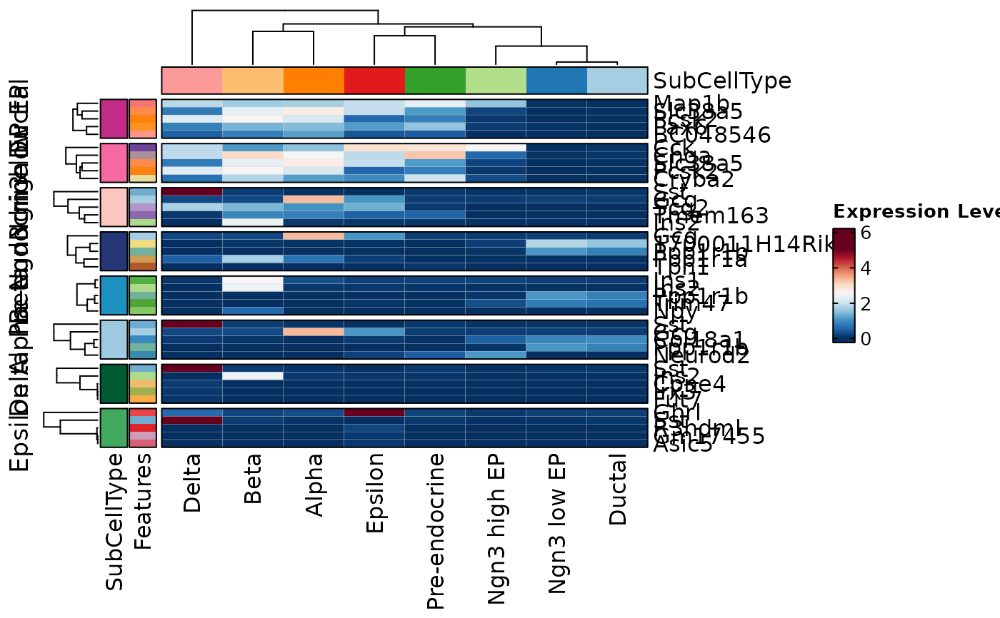
VizDEGs(degs, plot_type = "heatmap_log2fc", cutoff = 0.05, genes = 5)
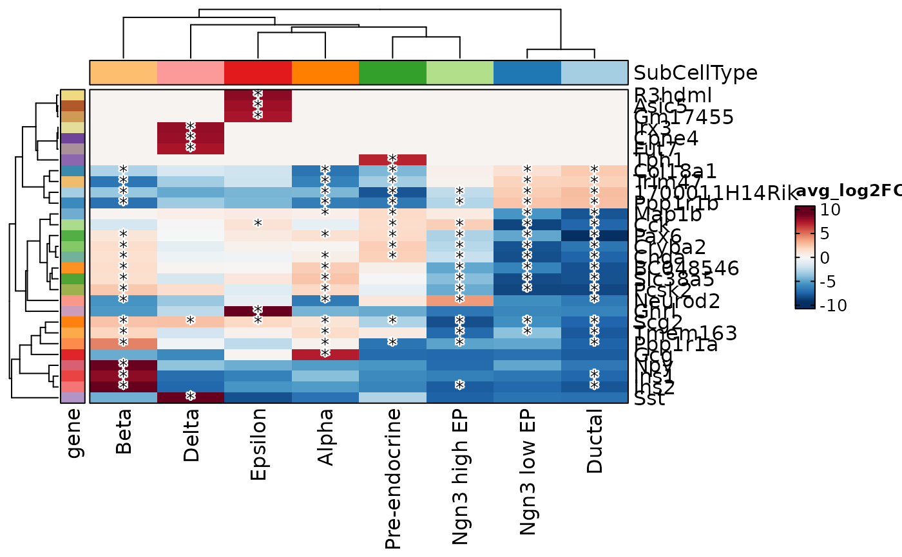
 VizDEGs(degs, plot_type = "dot", genes = 5)
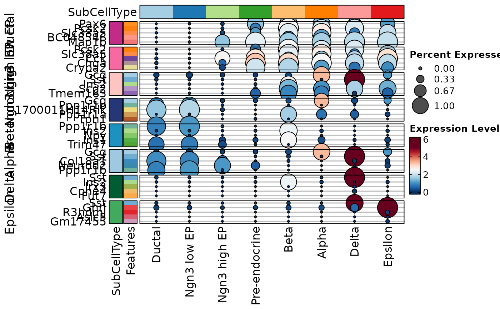
VizDEGs(degs, plot_type = "dot", genes = 5)
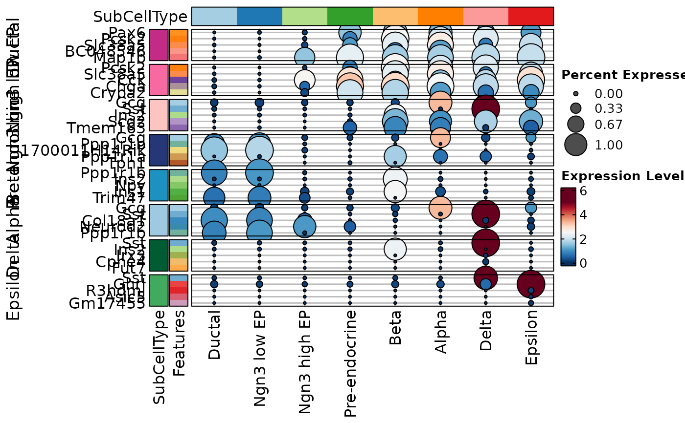
 # }
# }